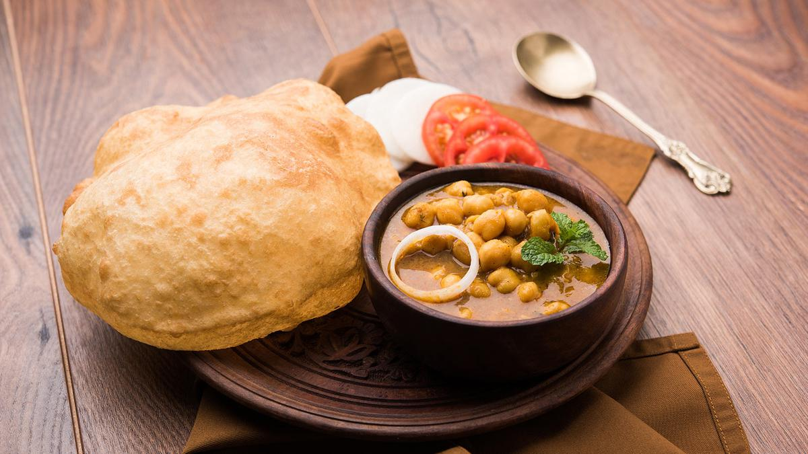
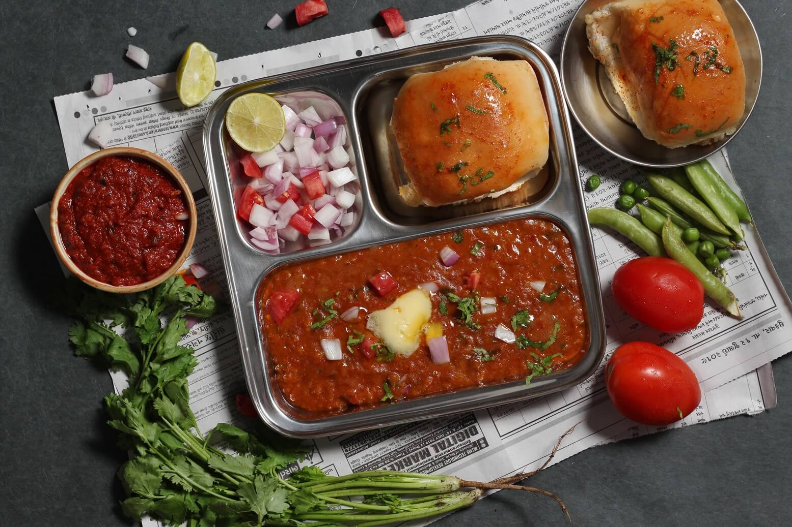

IndianFoodie
Dosa
Posted on Sep 9, 2020

Masala dosa is a variation of the popular South Indian dosa, which has its origins in Tuluva Mangalorean cuisine.
Chole Bature
Posted on Sep 17, 2020

Chole Bhature is a very popular North Indian dish. Chole with bhaturas is a an authentic delicacy.
Pav Bhajji
Posted on Sep 26, 2020

Pav Bhaji is an Indian fast food dish. The pav bhaji is a spicy preparation with a mixture of vegetables, either whole or mashed, a generous dose of fresh tomatoes, onions, garlic, a dollop of butter, consumed with warm bread gently or crispy fried in butter
Chicken Biryani
Posted on Oct 5, 2020

Chicken Biryani recipe is an extremely popular non-vegetarian rice dish which is a quintessential delicacy from the Mughlai cuisine.